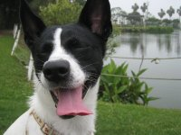

[Scone] 那些都是司康的午後時光
 |
| 讓我們掌聲歡迎最勇而無畏的試吃者 – Oreo |
當朋友在今年夏天 Meww 向我表達想念在 Smith & Hsu 享用美味司康搭配酸甜檸檬蛋黃醬的經典英式下午茶，從未做過司康的我便自告奮勇的表示，要在家中試做。心中想的，當然是這個完全不需要酵母發酵的英式餅乾，應該是相當容易就上手。想不到這個小小的念頭，卻導致一個又一個血淚交織的都是司康的午後時光 …
一開始我照著 Carol 的司康食譜，按圖索驥的操作，一直到步驟五 …
“混合完成的麵團用保鮮膜包起,略整成方型放冰箱 冷藏 30分鐘”
眼睛看著冷藏，急性子的我心裡卻想著冷凍。心想，要等 30 分鐘真是太辛苦了，於是就把混合麵團，用保鮮膜包起，完全沒有查覺異樣的送到冷凍庫去。其結果當然是從冷凍庫拿出的混合麵團，雖然一開始是硬梆梆的，但是在炎熱的夏天，麵團馬上解凍，釋出了水份，讓整個麵團都黏答答的。接下來的步驟，就像在捏陶土一般，勉強整出了三角麵團後，就送到烤箱去了。最後的成果，就如下圖，充滿了疙瘩 :
 |
| 其貌不揚的司康和配合演出的果微醺 |
 |
| 其貌不揚的司康和味道尚可的檸檬蛋黃醬 |
|  |
{kind=link}
真糟 ! 狗字典裡找不到挑食這個詞彙的 Oreo，以及以來者不拒之姿狼吞虎嚥所有除了狗飼料以外的食物，果然一副委婉一點就是”這是什麼鬼東西”或是直接一點 “妳想毒死我呀!” 的臉來表達她對其貌不揚的司康的意見。
幸好，我這個人沒有甚麼長處，就是對吃特別執著。經歷連 Oreo 都不願賞臉的其貌不揚司康，我又再接再勵重新參考了4F Cooking Home 的口袋司康食譜，於是就到了我司康午後人生的第二階段 -
 |
| 沒有身材的司康和小愣與背景配合演出的白桃拿鐵以及母親私釀的酵素 |
這應該沒有人覺得長的像司康吧 ! 怎麼會這麼扁平呢 !
 |
| 沒有身材的司康獨照 |
不過，家人都說味道還不錯。這也算沒有身材的司康唯一感到欣慰的地方了 ! 經過了兩次失敗，我上網發現大家試做幾乎都是一次就上手的美味又豐滿的司康，我不禁開始懷疑，做司康這件事，就像我人生的其它事情一般，愈是簡單愈是容易失敗呀 ! 然而， 4F Cooking Home 的網頁最近又公佈了英式司康的詳細做法，相信對吃一向是愈挫愈勇的我，一定有朝一日也可以做出名副其實，身材豐滿的司康的 !